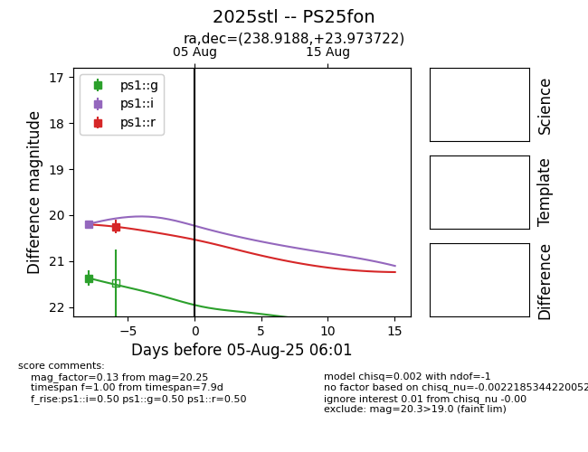

Target 2025stl at 2025-08-05 06:01, see:
TNS: wis-tns.org/object/2025stl
YSE: ziggy.ucolick.org/yse/transient_detail/2025stl
alt names
2025stl (yse,tns)
PS25fon (panstarrs)
coordinates:
equatorial (ra, dec) = (238.9188,+23.97372)
galactic (l, b) = (39.2202,+48.55333)
photometry
last ps1::g=21.37, ps1::i=20.19, ps1::r=20.25
1 ps1::g, 1 ps1::i, 1 ps1::r detections
